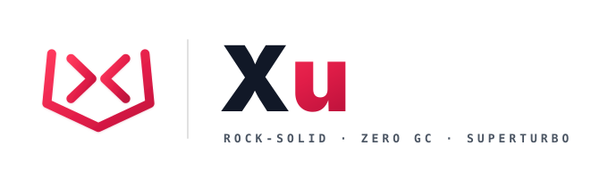
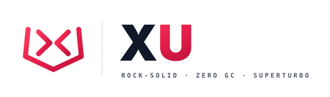
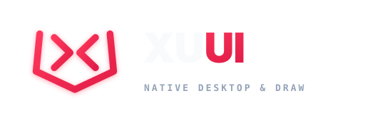
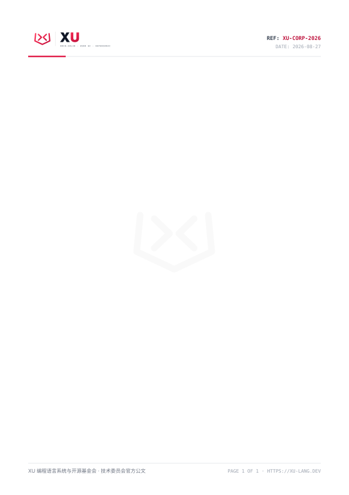
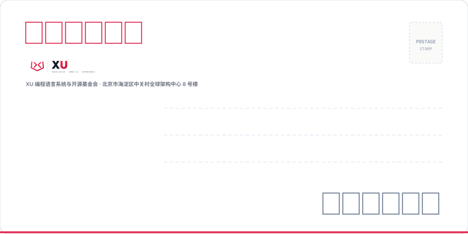
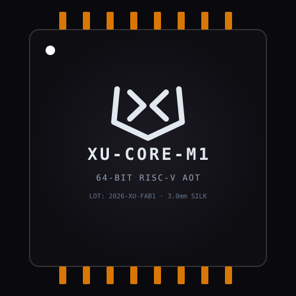

01
安全留白 · Clear Space
以图腾外框笔画宽度 X 为单位，任何文字、边框、图片或裁切线都不得进入 0.25X 安全区。
- 基准单位
- 1X = 外框笔画宽度
- 最小安全区
- 四边 ≥ 0.25X
- 裁切出血
- 不替代安全区
0.25X
0.25X

从甲骨金石图腾到可生产的 1:1 物料，统一 XU 生态在屏幕、代码与实体媒介中的识别语言。先定规则，再做表达。
• 基底哲学：采用 #050508 黑曜石底 + #F8FAFC 柔和钛白，避免 100% 刺眼纯黑纯白跳跃；主文字实测对比度为 19.46:1。
• 发光增益：朱砂金石红融入 #FF385C 霓虹微光，提升暗部环境下的字形聚焦力。
• 基底哲学：采用温润如玉的 #F8F9FA 宣纸浅灰底色，杜绝全屏高光白灼；纯白 #FFFFFF 仅用于卡片，形成自然景深层次。
• 光学加权：彩色字符（朱砂 #BE123C、海蓝 #0369A1、墨绿 #047857）针对小字号加深，均达到 WCAG AA 4.5:1+。
| Token 分类 | 语法示例 | 暗黑模式色值 | 明亮模式色值 | 光学对比度 / 语义规范 |
|---|---|---|---|---|
| # 库与模块导入 | #net/http | #FF385C + #38BDF8 |
#BE123C + #0369A1 |
AA (5.63:1+) · 区别于注释 |
| 核心关键字 | fn, struct, xu | #FF385C |
#BE123C |
AA (5.79:1+) · 霓虹/深朱砂 |
| 流控操作符 | >> (抛错), << (返回) | #F59E0B |
#B45309 |
AA (4.76:1+) · 琥珀流光 |
| 原生与结构类型 | int, f64, User | #38BDF8 |
#0369A1 |
AA (5.63:1+) · 冰魄天蓝 |
| 函数与方法名 | transfer, println | #A855F7 |
#7E22CE |
AA (5.14:1+) · 激光紫电 |
| 借用与所有权修饰 | $&User, $& | #EC4899 |
#9D174D |
AA (5.77:1+) · 洋红/深莓红 |
| 接口与约束 | struct@ Serializable | #60A5FA |
#1D4ED8 |
AA (6.36:1+) · 天青/钴蓝 |
| 字符串字面量 | "Stream payload" | #34D399 |
#047857 |
AA (5.20:1+) · 薄荷/墨绿 |
| 数值字面量 | 0, 10.0, 3.14159 | #FBBF24 |
#92400E |
AA (6.73:1+) · 暖亮金 |
| 纯代码注释 | // 仅双斜杠引导 | #6B7C93 |
#78716C |
AA (4.55:1+) · 中灰斜体 |
P1(105,140) → P2(90,295) → P3(250,370) → P4(410,295) → P5(395,140)y=218，右折笔 (<) 与其保持 40px 黄金通透气隙。
把“看起来像 XU”变成可交付、可验收的明确条件。
以图腾外框笔画宽度 X 为单位，任何文字、边框、图片或裁切线都不得进入 0.25X 安全区。
低于以下尺寸时只使用图腾，不叠加字标或副标，避免笔画糊化。
24px · favicon / app icon48px · compact UI
160px · lockup minimum品牌字标始终全大写；说明文字采用清晰的中英双语层级，不把品牌名当作普通句首词。
图腾不是可自由变形的装饰图形。以下操作会破坏识别，应在设计评审中直接退回。
禁止拉伸禁止旋转禁止投影禁止改色严格按照白色/浅色背景与黑色/深色背景分立设计：彻底剔除外挂杂符，母品牌图腾 100% 保持纯粹金石朱砂红；白底采用高对比碳黑字标，黑底采用柔和钛白反色字标。


XU 官方实体办公与行政事务载体，严格遵循「黑红双色」、「宣纸白卡」与「极客曜石」标准，全套矢量文件均已按 1:1 实体尺寸与出血线规范分立交付。


系统级提示声音频规范，用于 IDE、编译器通知与命令行构建反馈。

为 XU 官方桌面工具集与 `#ui` / `#ui/webview` 应用量身打造的高性能、高对比度组件套件。
专为 XU 语言所有权流转、协程并发借用生命周期与异常传播路径打造的可视化流程图审查系统，直观审计每一段内存转移与并发安全。
XU 语言使用 # 声明模块与第三方包依赖导入，严格进行编译期依赖拓扑解析与无环检测。
分配 buffer 局部变量，栈帧绑定唯一所有权（Unique Owner），生命周期处于当前作用域。
通过 xu 关键字分发后台轻量级协程，传入排他性可变借用 $&buffer，生命周期限定在协程执行期内，期间主协程对 buffer 的写操作受限，彻底消除数据竞争。
借用生命周期结束，所有权通过 << 零拷贝转移（Move）给调用方，无堆逃逸，零 GC 暂停时间。
buffer：节点 2 栈分配$&)http.ok (节点 4 零拷贝转移)#net/http: 系统级原生网络包#ui/draw: 图形渲染引擎#std/sync: 协程同步通道
坚如磐石的零运行时开销内存安全，闪电般的编译速度，极致清晰的心智体验。
| 特性指标 | XU 语言 | Rust | Golang | Vlang |
|---|---|---|---|---|
| 内存安全模型 | 零 GC 所有权/借用 | 所有权/借用检查 | 并发三色标记 GC | Autofree / 启发式 |
| 构建速度 (AOT) | 毫秒级极速构建 | 较慢 (LLVM 重型) | 极速构建 | 极速构建 |
| 语法心智负担 | 极简清晰 (>> / << / or) | 高 (生命周期/特征) | 极简 (样板多) | 极简 |
| 原生并发模型 | xu f() + chan/select | async/await 库生态 | go f() + chan/select | go / 线程池 |
xu worker_coroutine($&buffer)流程借用域已完成静态生命周期闭环，无泄漏风险，建议合并。